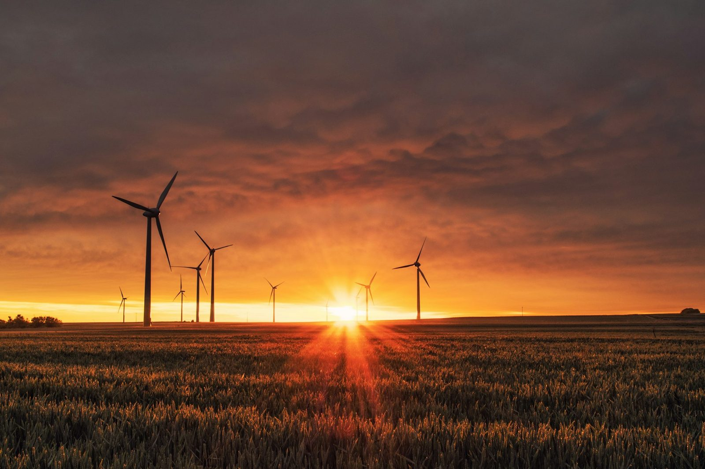

지난 10년간 '저탄소 건축'은 대체로 발표 자료의 한 장이었다. 2026년 그것은 자재 명세서의 한 줄이 되어가고 있다. 탄소네거티브 자재 — 배출하는 것보다 더 많은 탄소를 가두는 자재 — 가 콘크리트와 철강을 밀어내며 앞서가는 프로젝트의 기본값 자리를 노린다. 전환은 실재한다. 다만 마케팅이 보여주는 것보다 차가운 독해가 필요하다.
선언에서 명세서로
후보 목록은 더 이상 이국적이지 않다. 헴프크리트, 교차집성목(CLT), 미셀륨 기반 단열재는 이제 구조 강도와 단열 성능, 음향 특성에서 기존 자재에 견줄 만하다고 — 때로는 더 낫다고 — 주장하면서, 동시에 탄소를 건물의 몸체 안에 가둔다. 2026년 업계에서 도는 전망은 과감하다. 바이오 기반 콘크리트 대체재가 글로벌 상업용 콘크리트 시장의 약 15%를 차지하고, 재생 플라스틱 목재가 골조의 상당 부분에서 목재를 대신하며, 버섯 기반 단열재가 경쟁하는 기존 제품과 비용이 같아지는 지점에 다다른다는 것이다.

자재를 따라 인정이 뒤따른다. 글로벌 지속가능 건축상은 2026년판에서 '건축은 변형이다(Architecture Is Transformation)'라는 주제 아래, 낮은 내재 탄소를 부가 옵션이 아니라 출발점인 설계 조건으로 다루는 작업들을 기렸다. 상이 화려한 오브제 대신 보이지 않는 결정 — 어떤 자재를, 어떻게 조달해, 무엇을 배출하며 쓰는가 — 을 보상하기 시작했다면, 그 분야의 무게중심은 이미 옮겨간 것이다.
지속가능성 독해 — 탄소는 실제로 어디로 가는가
여기서 지속가능성 분석가는 이야기의 속도를 늦춰야 한다. '탄소네거티브'는 자재 한 포대가 아니라 전체 생애주기에 대한 주장이다. 목재는 수명이 다한 뒤 태우거나 매립하지 않는 한에서만 탄소를 저장한다. 헴프크리트의 흡수량은 작물을 어떻게 길러 어떻게 운송했는가에 달려 있고, 바이오 기반 시멘트도 어떤 결합재와 에너지가 들어갔는가의 발자국을 여전히 지닌다. 정직한 숫자는 검증된 요람에서 무덤까지(cradle-to-grave) 값이지, 브로슈어가 선호하는 요람에서 공장 문까지(cradle-to-gate) 헤드라인이 아니다. 빠르게 움직이는 트렌드의 위험은 '탄소를 가둔다'가 측정이 아니라 스티커가 되는 것이다.
"탄소네거티브는 자재 한 포대가 아니라 전체 생애주기에 대한 주장이다. 의미 있는 숫자는 검증된 요람에서 무덤까지 값이고, 나머지는 스티커다."
이 가운데 어느 것도 전환에 반대하지 않는다 — 제대로 하자고 주장할 뿐이다. 2026년의 진짜 고무적인 신호는 마케팅이 아니라 배관이다. 바이오 기반 대체재가 건축 법규 안으로 들어오고 규제 승인을 얻는 것 — 이것이 시범사업을 조달 표준으로 바꾸는 일이다. 저탄소 자재가 법규로 승인되고 보험에 들 수 있게 되면, 건축가는 개인적 위험을 떠안지 않고 그 자재를 명시할 수 있다. 그리고 그 순간이 트렌드가 인프라가 되는 지점이다.
편집장 코멘트
한국 브랜드에게 탄소네거티브 전환은 기회이자 시험이다. 기회는 이렇다. 글로벌 바이어가 검증된 저탄소 자재를 점점 더 원하고, 진짜 환경성적표지(EPD)를 가진 한국 제조사는 마침내 값이 매겨지기 시작한 지표 위에서 경쟁할 수 있다. 시험은 이렇다. 스티커는 실사를 통과하지 못한다. ARCHINODE의 입장은 검증 가능한 요람에서 무덤까지 데이터를 지닌 자재를 전면에 드러내고, 형용사가 아니라 그 숫자가 영업하게 하는 것이다. 시장이 정직하게 측정된 탄소에 값을 치르기 시작하면, 일찍 측정한 브랜드가 두 번 이긴다.